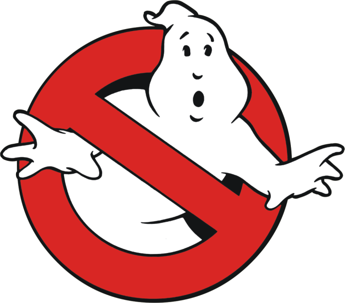

Ghostbusters
Acerca de la película
Ghostbusters, en español Los cazafantasmas, es una película estadounidense de 1984 del género comedia con algunos toques de ciencia ficción, producida y dirigida por Ivan Reitman, protagonizada por Bill Murray, Dan Aykroyd, Sigourney Weaver, Harold Ramis, Rick Moranis, Annie Potts, William Atherton y Ernie Hudson.
La película fue un éxito de taquilla y se registró como la comedia más taquillera de la década. Su banda sonora fue compuesta por Elmer Bernstein. La canción "Ghostbusters" de Ray Parker Jr. ganó el premio BAFTA 1985 a la mejor canción original. En 1989 se editó, además, el álbum de la banda sonora original de la película.
Peter Venkman (Bill Murray), Ray Stantz (Dan Aykroyd) y Egon Spengler (Harold Ramis) son tres parapsicólogos expulsados de la Columbia University en Nueva York, debido a sus estudios y prácticas poco ortodoxos, y que comienzan su propio negocio trabajando como cazafantasmas, e investigando fenómenos paranormales usando tecnología sofisticada para intentar capturar las manifestaciones ectoplasmáticas.
El éxito de su negocio les hace contratar a Janine Melnitz (Annie Potts), su despreocupada secretaria y a Winston Zeddemore (Ernie Hudson), como Cazafantasmas de apoyo.
Su primera cliente es Dana Barret (Sigourney Weaver), chelista que tiene una extraña visión en su apartamento y que se convierte en el interés amoroso de Peter. Tanto Dana como su vecino, Louis Tulley (Rick Moranis), son poseídos y convertidos en los avatares que darán entrada a una entidad destructora en nuestra realidad.
Los cazafantasmas descubren que el edificio en el que residían, fue construido por un arquitecto que practicaba ocultismo y es una puerta dimensional que permitirá el paso -vía ritual del Maestro de las llaves (Tulley) y la Guardiana de la puerta (Barret)- a Gozer el Gozeriano, un semidiós interdimensional que amenaza con destruir Nueva York y a todo el mundo.
Los problemas aumentan cuando Walter Peck (William Atherton), un empleado de salubridad que tiene desprecio por Venkman, apaga la unidad contenedora, liberando los espectros que habían sido atrapados. En medio de un gran esfuerzo, los Cazafantasmas derrotan a Gozer, salvan a Dana, a Louis y a la ciudad de Nueva York.